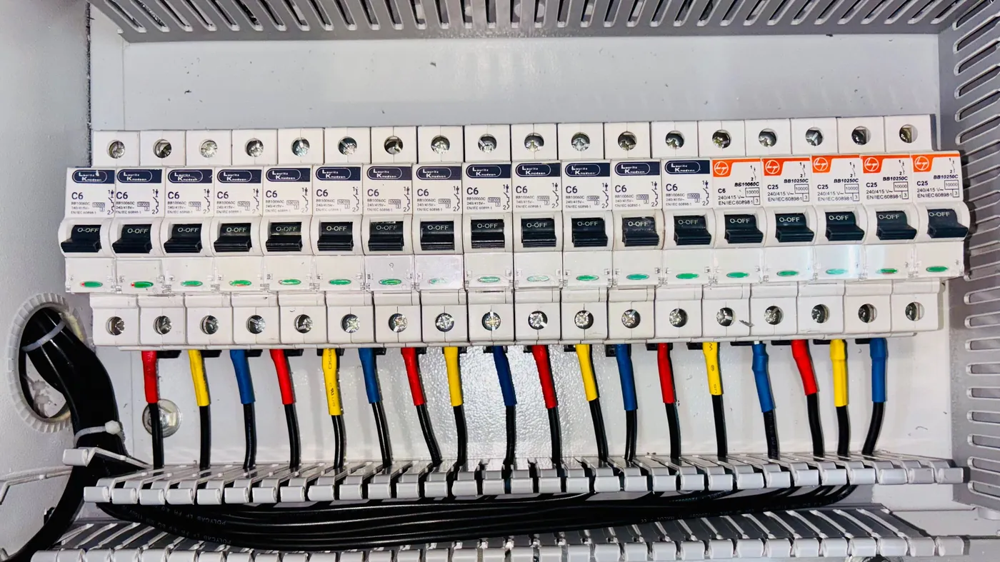

A person who cannot get an answer gives up. Software keeps asking. The brake has to sit outside the agent, and someone has to own the dial.
Amazon added rate limiting to its Bedrock AgentCore gateway, the managed front door that sits between an agent and everything it calls: search, knowledge bases, tools, models, plain HTTP endpoints. You can now cap requests per minute, tokens per minute and open connections, and you can set those caps per user, per tool, per model, or per combination of the three.
On its own that is a routine cloud release. What makes it worth reading is where the caps are placed. Amazon is not just protecting the model bill. It is protecting the things behind the gateway, and it is doing it per person as well as per system, because the failure it expects is one caller consuming what everyone shares.
One line in their guidance transfers to any stack: set a catch-all limit alongside the specific ones. A policy that names three tools leaves every other tool uncapped, and the tool nobody thought to name is usually the one that breaks.
A customer who cannot get an answer eventually stops asking. An agent does not. It retries, rephrases, splits the task and tries again, and it does all of that in the time it takes a person to read one sentence. Retrying is often the correct behaviour, which is exactly why it needs a stated limit rather than a hope.
There are two bills, and the smaller one is the model. The larger risk is what your agent is calling. Your order lookup, your CRM, your ticketing API: those were sized for humans clicking buttons at human speed. An agent making four hundred lookups a minute is a self-inflicted outage, and it takes the human channel down with it. The support team loses the tool while the agent is busy explaining that it cannot reach the tool.
Then there is fairness, which sounds soft until it costs you a month. Without a per-user ceiling, one team running a bulk job, or one badly formed loop, absorbs capacity that the rest of the business was relying on. Everyone else experiences that as the agent being slow, and nobody can say why.
The interesting part is not that a cloud gateway grew a throttle. It is that every number in that throttle is a business decision. How much may one customer consume in an hour. Which internal system is too old to be hit hard. What happens when the ceiling is reached: queue, degrade, or refuse. Those answers differ per company and get revised after the first incident.
Which raises the question of who holds the dial. If your agent runs inside a vendor's platform, the limits are theirs, tuned for their whole fleet rather than your fragile order database, and adjusting them is a support ticket. If the agent runs on your own infrastructure, the limits are yours, and so are the logs that say what tripped.
CX-Builder is self-hosted by design. The flows, the tool connections, the credentials and the model choice all sit on hardware you control, which is what makes a ceiling something you can set, watch and change on a Tuesday afternoon.

Cap the loop first. An agentflow's iteration limit is the cheapest brake available and it is a single field, so there is no excuse for leaving it open. Then separate the two rates people tend to merge: how often a user may start the agent, and how much that agent may consume once it is running. One invocation can be forty tool calls, so a limit on the front door is not a limit on the load.
After that it is per-tool guards on anything fragile, with timeouts and a bounded retry count on the older internal systems. Give each tenant or department its own credential so consumption is attributable to someone rather than to the agent in general. Send anything unusually large through a human approval step instead of letting it run. And log what tripped, because a limit you cannot see just looks like the product being slow.
Take the agent you run most and ask what happens if it retries five hundred times in a minute. If nobody on the team can answer, then five hundred is your current budget and your database's problem. Pick the real number this quarter, before an incident picks it for you.